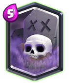

Legendary Card: Graveyard

The duration nerf and Ice Wiz + Dark Prince buff has hurt Graveyard. It can be countered more easily now. Mega Knight has become a counter to GY which can survive Poison with a lot of health. This has reduced this cards usage to a great extent.
For all people, the strength of Graveyard is its RNG. If it wasn’t for RNG, it would be far easier to counter as you would know where each skeleton will spawn and will results in less damage.
Graveyard is strong in Control and Beatdown-Control Hybrid archetypes. You can play it in the pure control Splashnado format, or in extremely fast and punishing cycle deck type or in dual win-condition Giant Graveyard hybrid deck.
Right now, GY is a very bad state. It needs its 1 sec back and Supercell should modify and rework its RNG so that it doesn’t become OP but still viable.